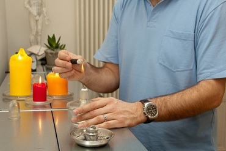

Moxibustione
La
moxibustione è una terapia basata sull'induzione di calore. I punti dell'agopuntura, o regioni del corpo più vaste, vengono riscaldati bruciando dell'Artemisia a contatto o in prossimità della pelle. L'Artemisia è una pianta che cresce tanto in Asia quanto in Europa e viene usata da molte culture a scopo terapeutico.

© Julo Indemini